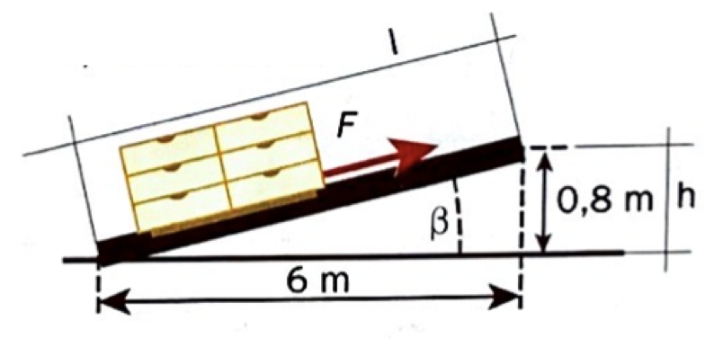

Una fuerza aplicada a un cuerpo realiza trabajo cuando produce un desplazamiento o deformación de dicho cuerpo. Si la direccioÌn de aplicacioÌn de la fuerza y la direccioÌn del desplazamiento no coinciden, solo la componente de la fuerza en la direccioÌn del desplazamiento realiza trabajo.
Denominando W al trabajo, F a la fuerza, s al desplazamiento y φ al aÌngulo que forman las direcciones de ambos, la expresión del trabajo será:
\[W= F\cdot s\cdot \cos\varphi \]
En teÌrminos vectoriales, se puede definir el trabajo como el producto escalar de los vectores fuerza y desplazamiento:
Cuando el cos φ es positivo, el trabajo se denomina trabajo motor; cuando es negativo, el trabajo se denomina trabajo resistente (por ejemplo, una fuerza que frena el movimiento de un cuerpo).
Nota:hemos de observar que la idea de trabajo con que nos expresamos en el lenguaje cotidiano no coincide con la definicioÌn cientiÌfica. AsiÌ, cuando elevamos un cuerpo con la mano, realizamos trabajo, sin embargo, cuando solo lo sostenemos en el aire, no estamos realizando trabajo, por mucho esfuerzo que estemos haciendo.
Ejercicio 1: Un camioÌn de mudanzas emplea un sistema de rampa, carrito y cable para subir los enseres pesados a la caja. Las dimensiones finales se dan en la figura. Con estos datos, suponiendo que se pueden despreciar los rozamientos, calcula el trabajo que se realiza para subir hasta la caja un mueble de 120 kg de masa. Verifica la solucioÌn para otras combinaciones de dimensiones de la plataforma, incluso subiendo en vertical sin plataforma. ¿A queÌ conclusioÌn se llega?

Trabajo realizado por una fuerza variable
Hasta ahora hemos supuesto que la fuerza que produce el trabajo era constante y la trayectoria seguida por el moÌvil era rectiliÌnea. Sin embargo, en muchos casos esto no es asiÌ como, por ejemplo, en un motor de explosioÌn. En general, la fuerza puede ir variando tanto su módulo como su dirección, al igual que el desplazamiento.
En estos casos, consideramos el desplazamiento total dividido en un gran nuÌmero de pequeños desplazamientos elementales (ğ‘‘ğ‘ ⃗) que se suponen rectiliÌneos y que, al ser tan pequeños, en ellos la fuerza se mantiene constante. El trabajo elemental realizado en dichos desplazamientos seraÌÌ entonces el que se obtiene del producto escalar de ğ¹âƒ— y ğ‘‘ğ‘ ⃗:
\[dW=\vec{F}\cdot d\vec{s}\]
El trabajo total correspondiente al desplazamiento entre una posicioÌn inicial Ay una posicioÌn final B, vendraÌÌ dado por la suma de todos los trabajos de cada desplazamiento elemental en que hayamos dividido el camino entre A y B. Como tenemos que sumar un número infinito de valores, el sumatorio será en realidad una integral:
Cuando el trabajo realizado por una fuerza para desplazar una partiÌcula entre dos puntos no depende del camino seguido se dice que es una fuerza conservativa. Son fuerzas conservativas las gravitatorias, las fuerzas elaÌsticas y las fuerzas electrostaÌticas.
Cuando el trabajo realizado sà depende de la trayectoria seguida entre el punto inicial y final, se dice que es una fuerza no conservativa. Son fuerzas no conservativas las de rozamiento o las fuerzas magneÌticas.
RepresentacioÌn graÌfica del trabajo
Podemos visualizar graÌficamente la magnitud trabajo si representamos en un diagrama cartesiano la fuerza en relacioÌn con el espacio recorrido.
El trabajo seriÌa igual al aÌrea de la figura limitada por la curva que representa a la fuerza, el eje del espacio y las abscisas correspondientes a los puntos inicial y final. Vemos ejemplos de algunos casos:
Fuerza variable y trayectoria no rectilÃnea
Este serÃa el caso más general que podrÃamos encontrarnos. TendrÃamos que representar una curva para cada componente de la fuerza frente a su coordenada correspondiente (Fx frente a x, Fy frente a y y Fz frente a z) Cada una de estas curvas tendrÃa un aspecto de este estilo:
Y el trabajo serÃa el área gris de la figura. Para calcularlo, habrÃa que resolver la integral.
Fuerza que varia linealmente con la distancia y trayectoria rectiliÌnea
Este serÃa el caso de un muelle de constante elaÌstica k (la fuerza es proporcional a la distancia, F = k·x). En este caso la gráfica es asÃ:
Como el trabajo es el área, ahora no necesitamos resolver ninguna integralporque sabemos calcular el área de un triángulo. AsÃ, el trabajo realizado por el muelle serÃa:
Este es el caso más sencillo que podemos encontrar y el trabajo no serÃa más que el área de un rectángulo (base · altura):
\[W=base\cdot altura=F\cdot s\]
Ejercicio 2: Calcula el trabajo que es necesario realizar para elevar un objeto de 5 kg de masa hasta una altura de 3 m, en los siguientes casos:
El objeto se eleva tirando de eÌl verticalmente.
El objeto alcanza dicha altura subiendo por un plano inclinado 37o respecto de la horizontal, en el que no hay rozamiento.
Ejercicio 3: Un hombre debe mover 15 m una caja de 20 kg realizando una fuerza de 40 N. Calcula el trabajo que realiza si:
Empuja la caja desde atraÌs.
Tira de la caja hacia delante.
Empuja la caja hacia abajo.
Empuja la caja con un aÌngulo de 60o sobre la horizontal.
Ejercicio 4: Determina el trabajo realizado por la fuerza F en el graÌfico de la siguiente figura:
Trabajo de rotación
Consideremos un cuerpo que puede girar alrededor de un eje O al aplicarle una fuerza
ğ¹âƒ— sobre un punto A del mismo. Este punto describiraÌÌ una trayectoria circular en torno al eje de giro. Al existir un desplazamiento, se realiza un trabajo denominado trabajo de rotacioÌn.
Supongamos un pequeño desplazamiento infinitesimal ğ‘‘ğ‘ ⃗ desde el punto A hasta el punto B. Si denominamos dθ al pequeño aÌngulo girado expresado en radianes y r a la distancia desde el punto A al eje de giro O, tenemos:
\[|\vec{ds}|=ds=r\cdot d\theta \]
Al ser ds muy pequeño podemos considerarlo praÌcticamente un vector rectiliÌneo que forma un aÌngulo φ con ğ‘. Por lo tanto, el trabajo realizado por la fuerza seraÌ:
\[dW=\vec{F}\cdot \vec{ds}=|\vec{F}|\cdot |\vec{ds}|\cdot \cos \varphi=F\cdot r\cdot d \theta\cdot \cos \varphi\]
Si tenemos en cuenta la definicioÌn de momento de una fuerza con respecto a un punto:
\[\vec{M}= \vec{r}\times \vec{F}\]
El vector momento es un producto vectorial de dos vectores, por lo que:
Su moÌdulo es \(M=|\vec{M}|=|\vec{F}|\cdot |\vec{r}|\cdot \sin \alpha =F\cdot r\cdot \sin \left ( \frac{\pi }{2}-\varphi \right )\)
Su direccioÌn es perpendicular al plano formado por los dos vectores ğ¹âƒ— y ğ‘Ÿâƒ—
Su sentido viene dado por la regla de la mano derecha.
Teniendo en cuenta que \(\cos \varphi= \sin \left ( \frac{\pi }{2}-\varphi \right )\), la expresión del trabajo elemental dW quedarÃa:
\[dW=F\cdot r\cdot d \theta\cdot \cos \varphi =F\cdot r\cdot d \theta\cdot \sin \left ( \frac{\pi }{2}-\varphi \right )=M\cdot d \theta\]
El trabajo total para un giro que vaya desde un ángulo inicial θA hasta un ángulo final θB seriÌa, por tanto:
En el caso particular en que el par o momento fuera constante, la expresioÌn del trabajo quedariÌa:
\[W=M \cdot \theta\]
siendo θ el aÌngulo total girado por el cuerpo y M el momento de la fuerza aplicada o par de rotacioÌn respecto al eje de giro.
Ejercicio 5: El par en la rueda de un automoÌvil es de 500 Nm. Determina el trabajo realizado para recorrer 1000 m. Toma el diaÌmetro de la rueda como 0,5 m. ¿CuaÌl es la fuerza aplicada por las ruedas sobre el suelo?
Trabajo de expansioÌn/compresioÌn de un gas en un cilindro
Consideremos un gas en el interior de un cilindro provisto de un eÌmbolo de seccioÌn S. Si denominamos por p a la presioÌn del gas, eÌste ejerceraÌÌ sobre el eÌmbolo una fuerza \(F = p \cdot S\).
Por otra parte, un desplazamiento dx del eÌmbolo da lugar a un variacioÌn de volumen ocupado por el gas de \(dV = S \cdot dx\) (si VB > VA, se trata de una expansioÌn; si VB < VA, se trata de una compresioÌn).
El trabajo realizado en un desplazamiento infinitesimal vendraÌ dado por:
\[dW=F\cdot dx=p\cdot S\cdot dx=p\cdot dV\]
El trabajo total seraÌ la suma (integral) de todos esos trabajos:
Si se trata de una expansioÌn (VB > VA) el trabajo seraÌ positivo, y cuando se trate de una compresioÌn (VB < VA) el trabajo seraÌ negativo.
RepresentacioÌn graÌfica del trabajo de expansioÌn/compresioÌn
Podemos visualizar graÌficamente el trabajo de expansioÌn si representamos en un diagrama cartesiano la presioÌn en relacioÌn con el volumen ocupado. El trabajo seriÌa igual al aÌrea de la figura limitada por la curva que representa a la presioÌn, el eje de volumen y las abscisas correspondientes a los voluÌmenes inicial y final.
Diferentes tipos de transformaciones sufridas por un gas en un cilindro
SeguÌn el tipo de evolucioÌn que siga el gas, podemos tener diferentes procesos, para los que se puede obtener una expresioÌn particular del trabajo:
Isobárica (p cte)
En el caso particular en que la presioÌn se mantenga constante durante todo el proceso de expansioÌn, la p puede salir de la integral (serÃa como sacar factor común de la suma) y la expresioÌn del trabajo se convierte en:
En esta transformación la temperatura es constante. Ahora no podemos sacar la p de la integral por lo que, para intentar calcular la integral del trabajo, tendriÌamos que saber coÌmo variÌa la presioÌn del gas con el volumen (porque la integral es en volumen, al llevar dV). Podemos suponer que el gas se comporta como un gas ideal y, por lo tanto, cumple la ecuacioÌn de los gases perfectos:
\[p\cdot V=n\cdot R\cdot T \ \ \ donde \left\{\begin{array}{lll} n: numero \ de \ moles \\ R: 0,082 \frac{atm \cdot l}{K \cdot mol}\\ R: 8,314 \frac{J}{K \cdot mol} \end{array}\right.\]
En ese caso, sustituyendo el valor de p en la expresioÌn del trabajo y teniendo en cuenta que, en una expansioÌn isoteÌrmica, T permanece constante (puede salir de la integral), la expresión del trabajo quedará:
En esta transformación la temperatura es constante. Ahora no podemos sacar la p de la integral por lo que, para intentar calcular la integral del trabajo, tendriÌamos que saber coÌmo variÌa la presioÌn del gas con el volumen (porque la integral es en volumen, al llevar dV). Podemos suponer que el gas se comporta como un gas ideal y, por lo tanto, cumple la ecuacioÌn de los gases perfectos:
\[p\cdot V=n\cdot R\cdot T \ \ \ donde \left\{\begin{array}{lll} n: numero \ de \ moles \\ R: 0,082 \frac{atm \cdot l}{K \cdot mol}\\ R: 8,314 \frac{J}{K \cdot mol} \end{array}\right.\]
En ese caso, sustituyendo el valor de p en la expresioÌn del trabajo y teniendo en cuenta que, en una expansioÌn isoteÌrmica, T permanece constante (puede salir de la integral), la expresión del trabajo quedará:
\[W=n \cdot R\cdot T \cdot ln\left ( \frac{p_{A}}{p_{B}} \right )\]
Isócora (V cte)
En este caso, al no haber variación de volumen, tenemos que dV = 0. Por lo tanto, el trabajo es nulo.
En una transformación isócora no se realiza ningún trabajo.
\[W=0\]
Adiabática (Q = 0)
En estos casos, el sistema estaÌ lo suficientemente aislado del exterior como para que no fluya calor, o la transformacioÌn es tan raÌpida que, en el breve tiempo que dura el proceso, se puede establecer que no hay transferencia de calor con el exterior. Esto es lo que se suele considerar al estudiar los motores teÌrmicos cuando se quema el combustible.
La ecuacioÌn de estado que rige este proceso es \(\left ( p \cdot V \right )^{\gamma }=constante\), donde γ (gamma) es el coeficiente adiabaÌticoque coincide con el cociente entre los calores especiÌficos del gas a presioÌn constante (cp) y a volumen constante (cv). Para el caso del aire, 𛾠= 1,4.
Observamos que son en todo semejantes excepto en que la primera tiene exponente 1 en el volumen y la segunda exponente ğ›¾. Por ello, para adaptarse maÌs a un proceso real se utiliza la expresioÌn:
\[p_{A}V_{A }^{n}=p_{B}V_{B}^{n}\]
que se denomina ecuacioÌn del proceso politroÌpico,y donde n es el exponente politroÌpico, el cual se puede ajustar a la forma de evolucioÌn del gas (que puede no ser exactamente ninguna de las vistas anteriormente).
Las transformaciones que hemos visto anteriormente serÃan casos particulares de la transformación politrópica para diferentes valores del exponente:
Cuando n= 0, el proceso es isobaÌrico.
Cuando n = 1, el proceso es isoteÌrmico.
Cuando n = ±âˆ, el proceso es isoÌcoro.
Cuando n = ğœ¸, el proceso es adiabaÌtico.
Por lo demaÌs, la expresioÌn del trabajo es ideÌntica al caso anterior pero con n.
\[W=\frac{p_{A}V_{A}-p_{B}V_{B}}{n -1}\]
Ejercicio 6:Un cilindro neumaÌtico posee un diaÌmetro de 20 mm y una carrera de 100 mm. Se alimenta con una presioÌn de 6 kp/cm2. Suponiendo que realiza la fuerza maÌxima para la que estaÌ diseñado, determina el trabajo desarrollado en una salida del vaÌstago. Expresa el resultado en julios.
Ejercicio 7:Un cilindro de 25 mm de diaÌmetro es alimentado a una presioÌn de 10 kp/cm2. Al salir el vaÌstago realiza un trabajo de 20 julios. Determina la carrera de dicho cilindro.
Ejercicio 8: Una cantidad de 0,50 moles de un gas que se comporta como ideal se expande isoteÌrmicamente y en forma reversible desde un volumen de 2 l hasta tres veces ese volumen a 32°C. ¿CuaÌl seraÌ el trabajo realizado?
Ejercicio 9: Se tiene un gas que ocupa un volumen de 2 l a una presioÌn de 12 atmoÌsferas y temperatura de 25 °C. El gas se expande isoteÌrmicamente hasta alcanzar un volumen de 8 l. Determina el trabajo realizado por el gas en su expansioÌn.
Ejercicio 10: Dos litros de nitroÌgeno a 0 °C y 5 atmoÌsferas de presioÌn se expanden isoteÌrmicamente, hasta alcanzar una presioÌn de 1 atm. Suponiendo que el gas es ideal, determina el trabajo realizado.
Ejercicio 11:Un mol de gas ideal sufre una expansioÌn reversible e isoteÌrmica desde un volumen inicial V1 hasta un volumen final 10·V1. Durante dicho proceso el gas realiza 1 000 caloriÌas de trabajo. Si la presioÌn inicial era 100 atm, calcula el valor de V1.
Recordemos dos conceptos importantes como son la intensidad y la diferencia de potencial (tensión o voltaje).
Se define la intensidad de una corriente eleÌctrica como la cantidad de carga eleÌctrica (q) que circula por un conductor en la unidad de tiempo (t):
\[I=\frac{q}{t}\]
Cuando la carga se mide en culombios (C) y el tiempo en segundos (s), la intensidad se mide en amperios (A), que es la unidad de intensidad de corriente eleÌctrica en el Sistema Internacional.
La diferencia de potencial se define como el trabajo necesario (W) para mover la unidad de carga eleÌctrica (q) entre dos puntos de un campo eleÌctrico:
\[V=\frac{W}{q}\]
La unidad de medida en el SI es el voltio (V), que equivale a un julio/culombio.
Dicho de otra forma, cuando una carga q se mueve entre dos puntos de un campoeleÌctrico que estaÌn a diferente potencial se realiza un trabajo, cuya expresioÌn es:
\[W=V \cdot q\]
Con lo que el trabajo se convierte en:
\[W=V \cdot I \cdot t\]
Ejercicio 12:En un circuito eleÌctrico se han aplicado 10 V de tensioÌn y circulan 2 A de intensidad. Determina el trabajo realizado si ha estado funcionando 3 horas.